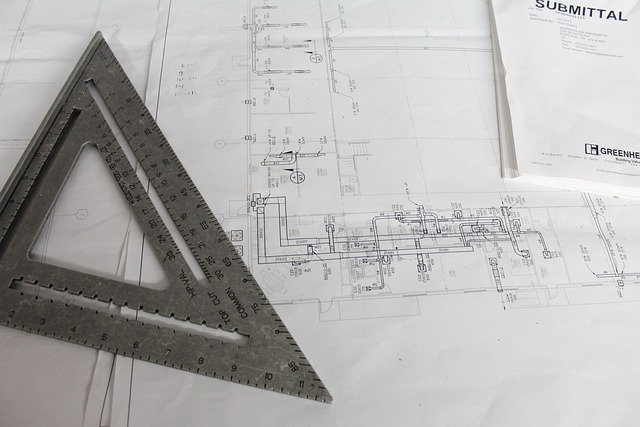

Services
CNC Turning
We specialize in turning.
Our turning department includes three CNC Okuma lathes capable of turning up to 10” in diameter.
CNC Shearing
We can shear material up to 36 square inches and up to 1/8 inches thick.
Prototyping

Prototyping is the process of manufacturing a component for the first time. We work with people to turn their vision into reality.
Engineering
Engineering is the process of designing a component to meet specific criteria. We offer reverse engineering on components where original drawings are not available. We also offer engineering services to modify existing components into news ones.
Sawing
We can saw any round or rectangular material up to 10” across including Aluminum, Brass, Copper, and Steel.
CNC Milling
We can mill most metal types. Contact us for more details.
We also work with:
- Nonferrous Materials
- Delicate or Intricate Details
- High Quality Finishes